How to read this
Start with Second Cutting if you are new, then use the pages below to follow proof, context, current projects, or place-based access.
Mimicorp Systems
Mimicorp builds software, media, and strategic project infrastructure that helps ecological work become easier to understand, support, and finance.

How to read this
Start with Second Cutting if you are new, then use the pages below to follow proof, context, current projects, or place-based access.
Latest field notes
Daily field notes are published on X for the fastest read on current observations, signals, and updates from the ground.
Follow @mimicorpxFirst Visit Guide
New visitors do not need the whole Mimicorp stack at once. Pick what you want first and the site will recommend the clearest entry path.
Recommended path
Use the documentary branch if you want the fastest, least overwhelming explanation of the work.
Why this works
One useful doorway is better than trying to decode the whole system at once.
What happens next
Then move to JoyNet for the public voice and values layer.
Direct Paths
You do not need the whole system at once. Pick the branch that best matches what you want first: listening, proof, public context, or direct experience.
Listening
The fastest way to understand the work through documentary reporting and conversation.
ListenField proof
The on-the-ground context behind the thesis, constraints, and operating reality.
Open sitePublic signal
The public voice and values layer surrounding the work.
Open sitePlace access
A direct encounter with landscape and lived context.
Open siteLatest updates
Follow daily field notes on X for the most current observations, patterns, and live signals from the field.
Follow @mimicorpxWork Together
Mimicorp works with funders, land partners, operators, and strategic collaborators who need software, media, and project infrastructure around ecological work. The goal is to make serious land-based projects easier to explain, easier to support, and easier to move toward execution.
That work also connects to The Ecological Archive, where Amelia serves on the Board of Directors as Secretary.
For the latest day-to-day signals, visitors can also follow the public field notes stream on X.
Book studio timeSoftware Systems
Decision tools, archives, and custom software that help teams organize evidence, track complexity, and support better action.
Discuss softwareMedia Creation
Documentary, field storytelling, and partner-facing media that help complex projects earn attention, credibility, and alignment.
Discuss mediaStrategy + Narrative
Positioning, communication systems, and strategic framing that help ecological projects become clearer to partners, funders, and stakeholders.
Discuss strategyFunding + Partnership
Collaborative planning, investor-facing materials, and delivery frameworks that connect support to real ecological outcomes.
Start a conversation